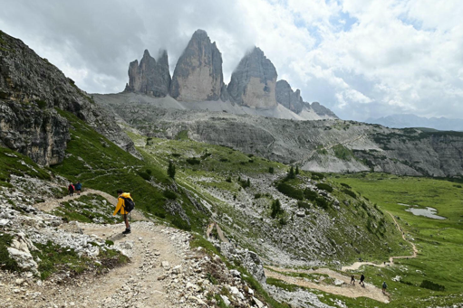
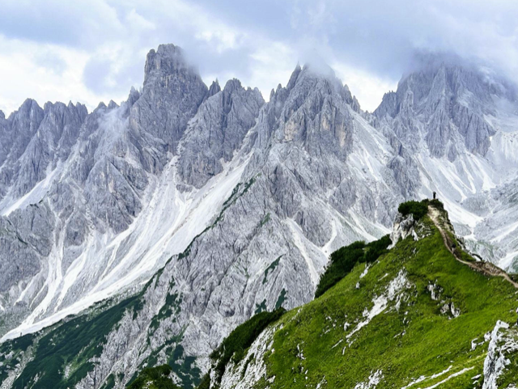
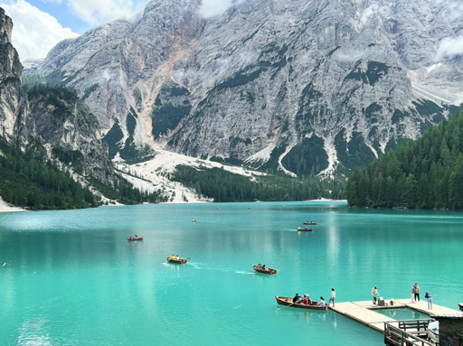
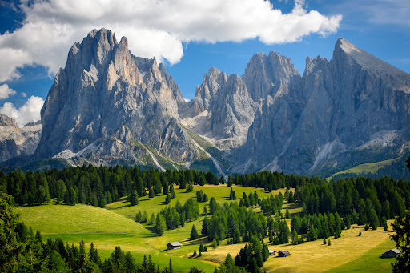
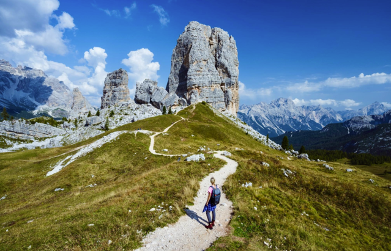
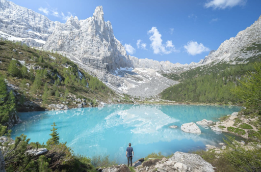
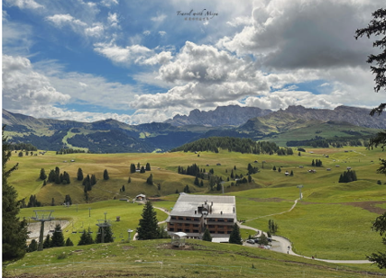
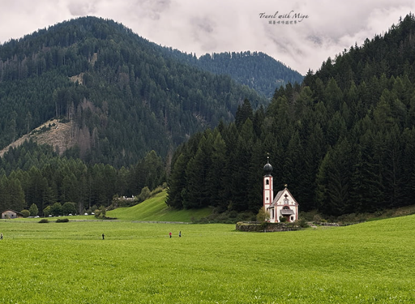

東區景點 — Cortina d'Ampezzo

三尖峰 Tre Cime di Lavaredo
✅ 10/1（四）
🔴
📌 特色
- 多洛米蒂最具代表性的三座石灰岩山峰（世界遺產）
- 可「繞整圈」，360°觀景，是最經典健行路線
- 沿途有山屋（rifugio），補給方便
🚶 路線資訊（經典環線）
距離約 9–10 km時間約 3.5–5 小時爬升約 350–450 m難度中（路況良好）
✅ 重點：Dolomites 必走 NO.1
本團安排：逆時針環線 Rifugio Auronzo → Lavaredo → Forcella → Locatelli 山屋（午餐，⚠️只收現金！）。10月可能初雪結冰，需備冰爪。

魔多之塔 Cadini di Misurina
✅ 10/1（四）下午
🗡
📌 特色
- 鋸齒狀尖塔山群（像魔戒場景）
- IG 最紅的「懸崖伸出拍照點」
🚶 路線資訊
距離約 3.2 km（來回）時間約 1–2 小時爬升約 150–200 m難度簡單（最後有懸崖須注意）
✅ 建議：可跟 Tre Cime 同一天
本團安排：三尖峰下午接續走，423 步石階，30–45 分鐘近距離仰望刀鋒尖峰。

布萊埃斯湖 Lago di Braies
✅ 10/2（五）
💎
📌 特色
- 多洛米蒂最著名湖景（翡翠湖＋木船）
- 環湖步道輕鬆平坦
🚶 路線資訊
距離約 3.5–4 km時間約 1–1.5 小時爬升幾乎平坦難度容易
✅ 重點：觀光型景點（非登山）
本團安排：10 月無需預約直接開車，清晨最美。可租划艇（€10–15／30 分鐘）。

斯佩奇山 Monte Specie（Strudelkopf）
✅ 10/2（五）下午
🔭
📌 特色
- 多洛米蒂「最容易登頂的全景山」
- 山頂 360° 看到 Tre Cime、Cadini、Cristallo
- 高山草原緩坡，視野開闊
🚶 路線資訊
距離約 8.8–9.5 km時間約 3 小時爬升約 300–400 m難度簡單
✅ 重點：最輕鬆看到 Dolomites 全景的高 CP 值登山點
本團安排：布萊埃斯湖上午後，下午接續 Prato Piazza 起登。山頂大十字架，360° 全景。

Cinque Torri 五塔山
✅ 10/3（六）上午
💎
📌 特色
- 五座巨大岩塔，景色壯觀
- WWI 戰壕遺跡（免費參觀）
🚶 路線資訊
距離約 5–6 km時間約 2–3 小時爬升約 200–300 m難度簡單～中
✅ 建議：可搭纜車縮短行程
本團安排：東→西移動日上午加碼。Bai de Dones 停車場免費。

Lago di Sorapis 索拉皮斯湖
💡 進階備案
🦋
📌 特色
- 藍色夢幻牛奶湖（極高人氣）
- 必走峭壁步道，非常刺激
🚶 路線資訊
距離約 11–13 km（來回）時間約 4–6 小時爬升約 500–700 m難度中～偏難（部分鐵鍊路段）
✅ 重點：Dolomites 最推薦「進階必走」
本團安排：體力與天氣允許時的進階備案。鐵鍊路段建議攜帶手套。
西區景點 — Val Gardena / Ortisei

Seceda 刀鋒稜線
✅ 10/4（日）
⚡
📌 特色
- 最誇張的「鋸齒狀稜線」
- Dolomites 經典攝影點
🚶 路線（纜車上山＋健行）
距離約 4–6 km時間約 2–3 小時爬升約 200–400 m難度容易～中
✅ 建議：搭纜車最 CP
本團安排：兩段纜車直達 2500m。⚠️ 2026 年強制線上預約時段票（www.seceda.it），8 人共約 €562，不可退款！午餐：Rifugio Sofie。

Alpe di Siusi 休斯高原
✅ 10/5（一）
🍂
📌 特色
- 歐洲最大高山草原
- 秋色落葉松景致，風景療癒
🚶 路線（彈性很多）
距離約 5–10 km（自選）時間約 2–4 小時爬升約 100–250 m（緩坡）難度簡單
✅ 重點：「風景散步型」，不是硬登山
本團安排：秋色落葉松黃金期最美！Mont Sëuc 纜車 08:30 開始，或 09:00 前開車上山。午餐：Baita Sanon（Speck／鹿肉／蘋果捲）。

Val di Funes ＆ 富內斯教堂（Santa Maddalena）
✅ 10/6（二）
⛪
📌 特色
- 小教堂＋鋸齒山景（經典明信片）
- 適合拍照、輕鬆散步
🚶 路線
距離約 2–5 km時間約 1–2 小時爬升約 50–150 m難度非常輕鬆
✅ 拍照聖地（經典明信片構圖）
本團安排：孤獨教堂 St. Johann（€4–5）+ St. Magdalena 觀景台 + Adolf Munkel 步道（#36→#35），Geisler Alm 躺椅面峰。下午光線最美。
🌈
Lago di Carezza 彩虹湖
✅ 10/7（三）備案日
📌 特色
- 寶石色湖水 + Latemar 山倒影
- 輕鬆環湖散步，老少咸宜
🚶 路線資訊
距離約 1–1.5 km（環湖）時間約 30–60 分鐘爬升< 30 m難度非常輕鬆
✅ 重點：純觀光散步，天氣差時改為補拍備案日
本團安排：停車 €3/h，環湖約 1 小時。⚠️ 今晚打包，明日 09:00 前退房！